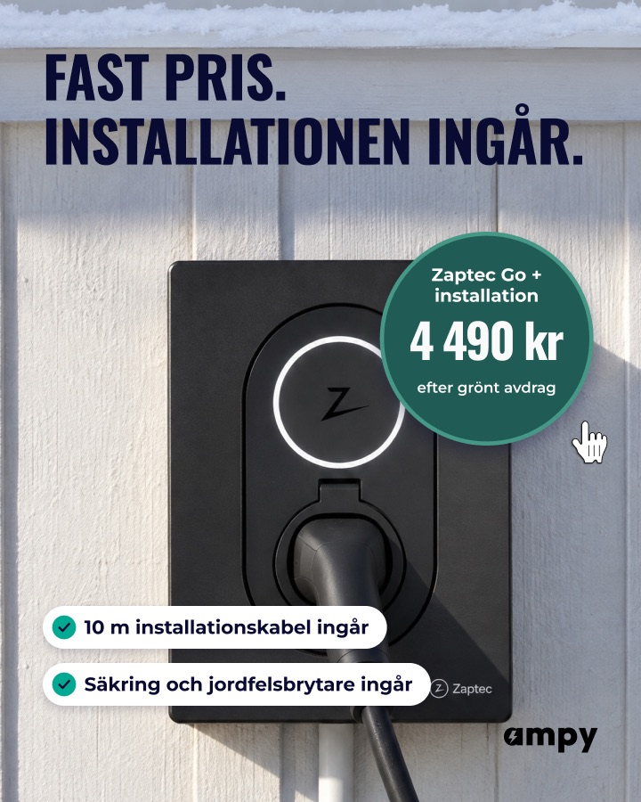

Grupp 01 · Laddbox · 1 bild
FAST PRIS. / INSTALLATIONEN INGÅR.
30/40-
1Invändning31/40Vårt val
Vad kostar installationen? Den ingår.
Frågan är exakt den kunden tänker när hen ser ett laddboxpris, och svaret kommer på tre ord. Brickan bredvid ("Zaptec Go + installation 4 490 kr") bevisar svaret direkt.
Ogilvy · Hormozi · Vaynerchuk
- Ogilvy
- Ett löfte i kundens egen fråga, med beviset inom synhåll.
- Hormozi
- Angriper ansträngningen och osäkerheten i nämnaren på en gång.
- Vaynerchuk
- Låter som en replik från en elektriker, inte som en broschyr.
Risk: "Den ingår" gäller standardinstallationen (10 m kabel); längre kabel kan kosta mer, vilket finstilten bör säga en gång.
Granskning: Sann (installationen ingår i 4 490 kr); "Den ingår" är lite stelt men kort.
-
2Nyhet / besked27/40
Årets avdrag? Beställ senast 15 december.
Det enda som är äkta nytt i november är att årets avdrag stänger, och vinterbilden bär den känslan. Datumet är belagt och ger en verklig anledning att agera nu.
Ogilvy · Hormozi · Vaynerchuk
- Ogilvy
- Nyheter läses, och den här är sann och daterad.
- Hormozi
- Kortar tidsfördröjningen genom ett skäl att inte vänta.
- Vaynerchuk
- En högerkrok; den fungerar bara om andra annonser i flödet har gett värde först.
Risk: Grupp 20–24 äger deadlinevinkeln; kör den här bara om brinna inne-gruppen pausas, annars blir det en nära dubblett för Andromeda.
Granskning: Deadlinevinkeln ägs av 20–24, nära dubblett.
-
3Callout / etikett26/40
Elbil i Storstockholm? Installationen ingår.
Ogilvys lokala callout gör att rätt läsare känner igen sig, och erbjudandet följer direkt. Platsen gör annonsen konkret utan att bli ett nationellt anspråk.
Ogilvy · Hormozi · Vaynerchuk
- Ogilvy
- Ropa på målgruppen och staden, sedan löftet.
- Hormozi
- Etikett plus resultat, två calloutnivåer staplade.
- Vaynerchuk
- Kontexten är lokal, och det ska rubriken också vara.
Risk: Utesluter Mälardalen-publiken; använd bara i en uppsättning som riktas mot Storstockholm.
Granskning: Utesluter Mälardalen och callouten är bred.
Frågan gör brickan till svaret i stället för att rubrik och bricka säger samma sak. Den slår nuvarande men inte med fyra poäng; vinsten är samspelet. Ligger nära 19 ("ingår") i ordval, men bild och mekanism skiljer, så den får stå.
Djupanalys av rubriken i dag, sex perspektiv
- Psykologi
- Rubriken tar bort den dolda kostnaden, som är den största oron vid köp av laddbox. Den talar inte till någon särskild, så självreferensen saknas helt.
- Copywriting
- Den är kort, sann och har en fördel, men "fast pris" är ett påstående som alla hantverkare gör. Den svarar på en fråga som läsaren inte hunnit ställa.
- Försäljning
- Den sänker ansträngningen i Hormozis nämnare, vilket är rätt. Men den låter som ett villkor och inte som ett svar på kundens egen invändning.
- Marknadsföring
- Snön på taket ger en vinterkänsla som rubriken inte använder alls. Den dolda raden med [DATUM] visar att bilden är tänkt för deadline, men den är inte ifylld.
- Best practice
- Formatet produkt plus stor rubrik plus prisbricka är toppformatet enligt Motion. Rubriken och brickan säger delvis samma sak ("installation" står i båda).
- E-handel
- Det motsvarar Hemfrids "Fönsterputs ingår", fast utan en fråga eller köpsituation framför. De bästa öppnar med köparens fråga och låter etiketten stänga.
Underrubrik och paragraf: Ingen underrubrik behövs, de två chipsen bär beviset. Den dolda raden "Beställ senast [DATUM] för installation före jul" ska inte tändas: "före jul" saknar belägg. Använd i så fall "Beställ senast 15 december" och bara om rubriken inte redan säger datumet.
- Dold rad "Beställ senast [DATUM] för installation före jul": datumet är tomt och "före jul" saknar belägg. Rätt datum är 15 december (beställning).